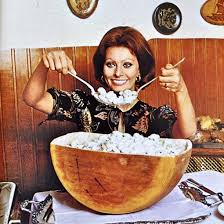

"Todd's Famous Baked Penne"

Description
This one is a family fave! I got the recipe from a Whole Foods website. Pretty easy to make, and pretty hard to screw up!
- one pound dried penne
- 1 cup part-skim ricotta cheese
- 1/2 teaspoon dried basil
- 1 (25.0-ounce) jar marinara sauce, divided
- 1/4 teaspoon ground black pepper
- 3/4 cup shredded mozzarella cheese
Steps!
- Preheat oven to 350°F.
- Bring a large pot of salted water to a boil over high heat. Add the penne and cook until tender, about 9 minutes. Drain and set aside to let cool for about 5 minutes.
- Meanwhile, combine ricotta cheese, basil, 1 1/2 cups of the pasta sauce and pepper in a large bowl. Transfer pasta to bowl with cheese mixture and toss gently to coat.
- Spread 1/2 cup of the remaining pasta sauce over the bottom of a 7x11-inch baking dish. Spoon pasta mixture into dish and spread out evenly.
- Drizzle remaining sauce over the top, sprinkle with mozarella and bake until golden brown and hot throughout, about 30 minutes.
Nutritional info:
Per serving: 450 calories (70 from fat), 8g total fat, 3g saturated fat, 15mg cholesterol, 660mg sodium, 76g carbohydrates (6g dietary fiber, 14g sugar), 20g protein.
Back